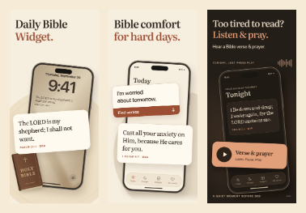

{kind=link}
{kind=link}
{kind=link}
1. Daily Bible Widget
Сохранили телефон и крупный стих из r3. Добавили Библию и прямой заголовок: понятно, что это ежедневный библейский виджет.
Первый кадр — ежедневный виджет. Второй — моя тревога и стих в ответ. Третий — вечернее прослушивание из r3.
Сохранили телефон и крупный стих из r3. Добавили Библию и прямой заголовок: понятно, что это ежедневный библейский виджет.
«Я переживаю о завтрашнем дне» → Find verses → стих о тревоге. Собственная ситуация вместо отдельной плашки Anxious.
Исходный третий кадр r3 сохранён без изменений: читаемый стих, вечерний экран и крупная кнопка Play.

Заголовки первого и второго кадров увеличены с 45 до 53 px. Мелкие маркетинговые подписи в них убраны. Третий оставлен точно как в r3 по выбранному ориентиру. Миниатюры — проверка читаемости, а не точная копия всех размещений App Store.
Поддержка виджета, поиск своими словами и вечернее аудио подтверждены кодом приложения. Библейские тексты и ссылки взяты из его контента. Это рекламная композиция интерфейса: поля и стих увеличены для наглядности. Конкретный порядок результатов для запроса о завтрашнем дне на устройстве не проверялся.
Третий PNG совпадает с r3 побайтно. Все кадры — 1320 × 2868, RGB. Проверены переносы, границы, миниатюры и работа галереи на мобильной и десктопной ширине.
Новый r6 ещё не проверен на живой аудитории или в эксперименте App Store. Прежние синтетические оценки Jev относятся к r3–r5; они не доказывают конверсию r6.
Тексты и сценарии r6 · Проверка экспорта · Предпочтения владельца · Экраны приложения
r4 / r5 и прежние проверки консилиума и Jev · Проверка лавров и числа стихов · r2 · r1
{kind=link}
{kind=link}
{kind=link}